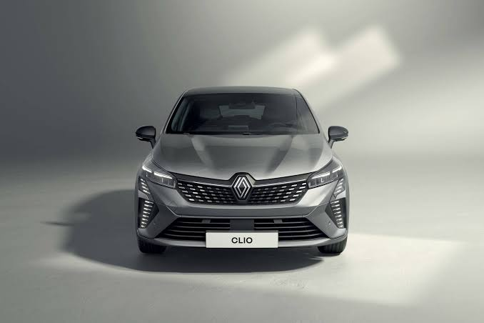
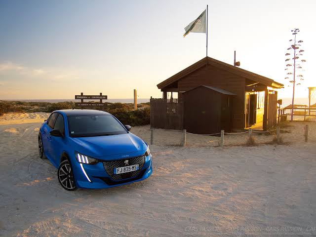
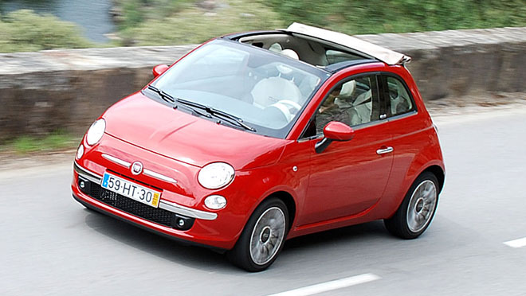

Louez votre véhicule au soleil de la Méditerranée
Nos offres de location
Des véhicules récents, disponibles dans toutes nos agences, avec kilométrage illimité.
Autoloc Mediterranée
Des véhicules récents, disponibles dans toutes nos agences, avec kilométrage illimité.


